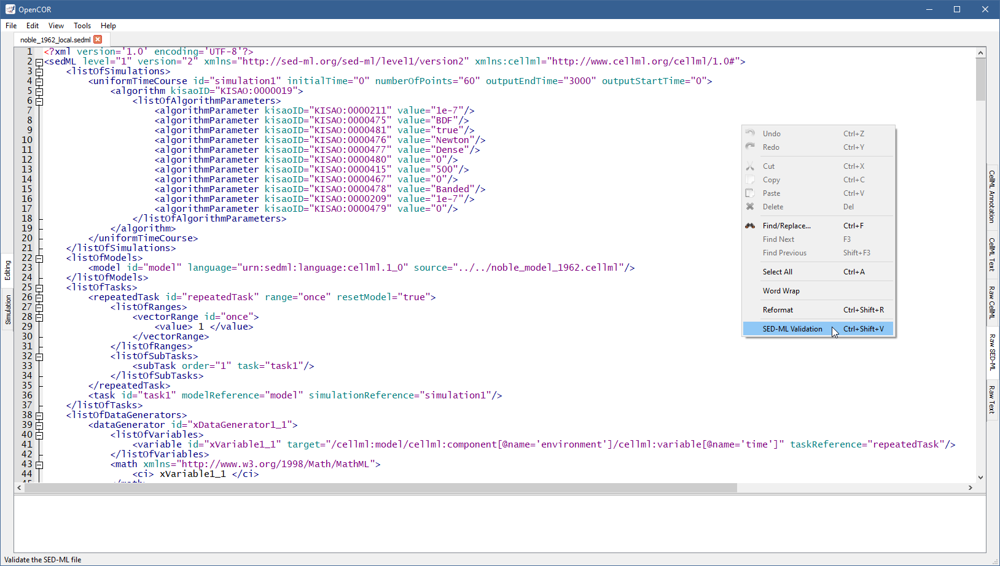
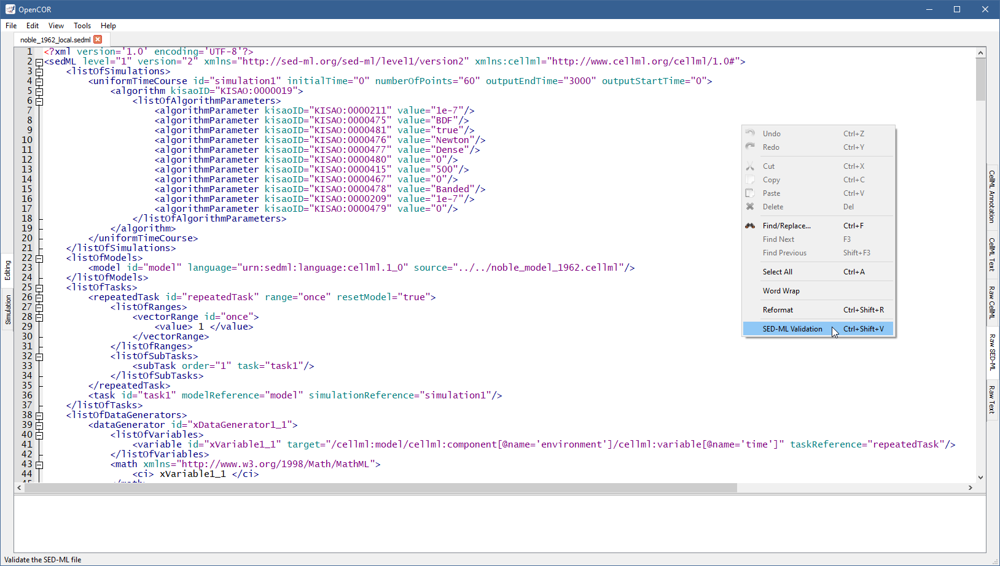

RawSEDMLView plugin¶
The RawSEDMLView plugin can be used to edit SED-ML files in their raw format using a text editor. If you open a SED-ML file, it will look something like:
Apart from using syntax highlighting, the view has the same features as the Raw Text view.
The panel below the text editor is used to list any SED-ML issue that results from trying to validate a SED-ML file, which can be done either by pressing Ctrl+Shift+V or through the Tools | SED-ML Validation menu or the context menu of the text editor:
 

If the SED-ML file is valid, a message box gets displayed:
Otherwise, the bottom panel lists all the issues with the SED-ML file:
To double click on an issue will get the text editor to navigate to the corresponding line.
It may happen, while editing a SED-ML file, that the contents of the text editor is not properly formatted anymore.
In this case, you can reformat it by pressing Ctrl+Shift+R or through the Tools | Reformat menu or even the context menu of the text editor.